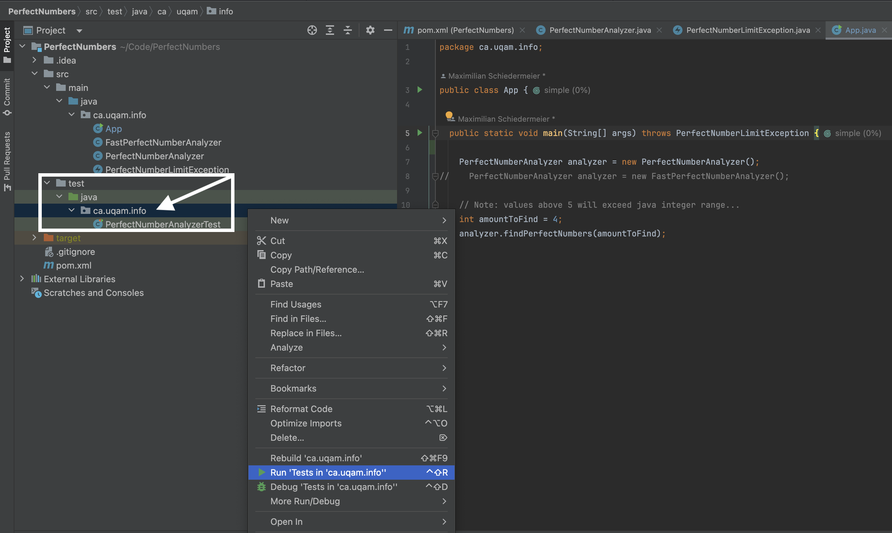

Atelier 06
Dans cette séance de laboratoire, vous allez pratiquer la syntaxe de
base de JUnit, ce qui vous permettra d'écrire des tests unitaires
simples, y compris des conditions spéciales comme les délais d'attente
et les exceptions.
Pour cet exercice, vous travaillerez avec plusieurs bases de code préparées. Les instructions git clone pour le code nécessaire sont incluses tout au long de ce guide.
Nombres parfaits
- Les nombres parfaits sont des nombres positifs pour lesquels la somme de tous les diviseurs (y compris
1) s'additionne au nombre lui-même. - Les nombres parfaits sont rares, ils sont beaucoup plus difficiles à trouver que les nombres premiers.
- Les quatre premiers nombres parfaits sont :
6,28,496,8128. - Voici un lien vers un vérificateur de nombres parfaits primitifs. Ce sera votre tâche d'implémenter quelques tests de base.
Info
On ne sait pas s'il existe des nombres parfaits impairs, ni si un nombre infini de nombres parfaits existe. Si vous trouvez une preuve pour l'un ou l'autre, faites-le moi savoir et je m'assurerai que vous obteniez une bourse incroyable.
Tests unitaires de base
Les tests unitaires sont des méthodes qui remplissent les conditions suivantes :
- La signature de la méthode commence par
public void. - La méthode est décorée avec l'annotation
@Test. - La méthode est placée dans une classe du sous-dossier
src/test/java(pour les projets maven).
Pour le premier exercice, vous devrez écrire des tests unitaires pour une implémentation fournie.
Pour préparer la tâche, configurez l'outil Analyseur de nombres parfaits fourni :
- Clonez le projet :
git clone https://gitlab.info.uqam.ca/inf2050/perfectnumbers.git - Ouvrez le projet dans IntelliJ
- Lancez-le avec :
mvn clean compile exec:java
Le projet calculera les 4 premiers nombres parfaits, puis s'arrêtera.
À vous de jouer
Il est temps d'écrire quelques tests unitaires de base.
-
Ouvrez la classe préparée et localisez le test unitaire existant :
@Test public void findFirstFourPerfectNumbers() throws PerfectNumberLimitException { PerfectNumberAnalyzer analyzer = new PerfectNumberAnalyzer(); int[] firstFour = analyzer.findPerfectNumbers(4); int[] expectedResult = new int[] {6, 28, 496, 8128}; Assert.assertArrayEquals("Numbers computed by analyzer are incorrect!", expectedResult, firstFour); } -
Dans IntelliJ : Naviguez vers la représentation du système de fichiers à gauche. Faites un clic droit sur le package de test (
ca.uqam.info), puis sélectionnezExécuter les tests dans info.
 - Vérifiez que votre premier test passe.
Ensuite, nous voulons ajouter une contrainte de temps :
- Ajoutez une copie du test qui vérifie pour les 5 premiers nombres parfaits !
- Le 5e nombre parfait est :
33550336 - Le test prendra très longtemps à réussir (environ 15 minutes). C'est parce que le 5e nombre parfait est beaucoup plus grand. Vérifier 33 millions de nombres prend du temps.
- Clairement, nous n'avons pas autant de patience, donc nous voulons que le test échoue si le 5e nombre n'a pas été trouvé dans une seconde.
- Modifiez l'annotation
@Testpour définir un seuil supérieur de1000millisecondes. - Exécutez à nouveau les tests et assurez-vous que le résultat du test apparaît dans la seconde.
- Le second test devrait maintenant échouer.
Tests de régression
- Le test de régression vise à garantir que l'ajout de fonctionnalités ne casse rien qui fonctionnait déjà auparavant.
- Maintenant, nous voulons améliorer la recherche existante de nombres parfaits.
- Mais nous voulons également nous assurer de ne pas régresser !
À vous de jouer
Voici une classe qui recherche des nombres parfaits beaucoup plus rapidement.
package ca.uqam.info;
/**
* Faster extension for perfect number analyzer. Searches only numbers by constructing candidates
* in binary representation.
*
* @author Maximilian Schiedermeier
*/
public class FastPerfectNumberAnalyzer extends PerfectNumberAnalyzer {
/**
* Provides the next number to test. Default implementation tests all numbers, i.e. each iteration
* is just the number itself. Uses binary formula to find perfect number candidates. All perfect
* numbers are of form 1....10.....0, which one more "1"s than "0"s.
* Examples: 110, 11100, 1111000, ...
*
* @param iteration as the amount of 0s to contain
* @return decimal equivalent of the binary constructed candidate.
*/
protected int getNextNumberToTest(int iteration) {
String binaryNumber = "1";
for (int j = 0; j < iteration; j++) {
binaryNumber = "1" + binaryNumber;
binaryNumber = binaryNumber + "0";
}
return Integer.parseInt(binaryNumber, 2);
}
}
Pourquoi cela serait-il une approche valide ?
Les quatre premiers nombres parfaits en binaire sont : 110, 11100, 11111000000, 1111111000000
... voyez-vous un motif ? L'algorithme amélioré construit des candidats
en binaire et ne vérifie que ces candidats. C'est beaucoup plus rapide
que de vérifier tous les nombres !
- Ajoutez la classe ci-dessus à votre projet.
- Modifiez
App.javapour utiliserFastPerfectNumberAnalyzerau lieu dePerfectNumberAnalyzer, et recherchez les 5 premiers nombres parfaits au lieu des 4 premiers. - Ajoutez un nouveau test unitaire
findFirstFivePerfectNumbersFastàPerfectNumberAnalyzerTestqui vérifie les 5 premiers nombres parfaits, en utilisant l'implémentation rapide.
Délai d'attente du test
- En classe, vous avez vu comment "décorer" les annotations
@Test, pour considérer des contraintes supplémentaires. - Trouvez la syntaxe pour définir une limite de temps supérieure pour l'exécution d'un test.
À vous de jouer
- Modifiez le test
findFirstFivePerfectNumbersFastprécédemment implémenté et ajoutez une contrainte de temps. - Il doit échouer s'il prend plus de 0,1 seconde.
- Lancez vos tests et vérifiez qu'il passe, en utilisant l'implémentation de recherche rapide.
- Modifiez votre test pour utiliser l'implémentation lente de recherche et vérifiez qu'il échoue. Ensuite, revenez à l'implémentation rapide.
Attente d'exception
- Les nombres parfaits sont assez "rares".
- Le sixième nombre est déjà
8.589.869.056, ce qui est supérieur à la valeur maximale d'entier Java (2.147.483.647). - Les deux implémentations ont un contrôle de sécurité qui refuse l'exécution lorsque plus de 5 nombres sont demandés.
- Il serait également préférable de tester si le contrôle de sécurité est correctement implémenté.
- Correctement implémenté signifie : le programme doit lancer une
PerfectNumberLimitException, lorsqu'il est demandé de rechercher plus de 5 nombres parfaits. - Trouvez la syntaxe pour vérifier qu'une exception a été lancée pendant l'exécution d'un test.
À vous de jouer
- Ajoutez un test
findFirstFivePerfectNumbersFast, qui tente de rechercher les 6 premiers nombres parfaits. - Si exécuté, le test échouera avec une exception.
- Modifiez le test pour qu'il ne passe que si une
PerfectNumberLimitExceptionest lancée.
Tests avec état
Les tests doivent fonctionner dans n'importe quel ordre.
- Ce n'est pas un gros problème lorsque l'on travaille avec des fonctions mathématiques (par exemple, vérifier les nombres parfaits).
- Chaque test crée une nouvelle instance d'objet, donc travailler avec des objets ayant un état n'est pas non plus un problème. Chaque test vit dans son propre environnement d'objet.
- Mais parfois, vous travaillez avec des objets qui persistent des états externes, c'est-à-dire des bases de données.
Pour les tâches suivantes, vous travaillerez avec le projet d'exemple StudentDatabase, disponible sur GitLab.
- Créez une "base de données" sur votre bureau :
- Nom de fichier :
studentdb.txt - Contenu : "Max Ryan Quentin Romain"
- Clonez le code du projet d'exemple StudentDatabase, et ouvrez-le dans IntelliJ :
git clone https://gitlab.info.uqam.ca/inf2050/DataBaseTesting.git
Après
- Un autre problème avec les bases de données est que les tests ne sont plus indépendants.
- Même si JUnit crée une nouvelle instance de classe de test pour chaque méthode annotée avec
@Test, les données sont persistées en dehors de la classe. Par conséquent, les tests qui modifient l'état entrent facilement en conflit les uns avec les autres.
À vous de jouer
- Ajoutez deux tests individuels supplémentaires :
testAddStudent(), qui appelleTextDatabase.addStudent("Hafedh"). Suivi d'une lecture de la base de données et vérification queHafedha été ajouté et que la liste contient maintenant 5 étudiants.testRemoveStudent(), qui appelleTextDatabase.removeStudent("Max"). Suivi d'une lecture de la base de données et vérification queMaxa été retiré et que la liste contient maintenant 3 étudiants.- Lorsque vous exécutez tous les tests, certains échoueront, car les tests ne sont plus indépendants.
- Revisitez le contenu du cours et trouvez une annotation supplémentaire pour déclarer une méthode à exécuter après chaque test.
- Écrivez une méthode d'assistance qui nettoie la base de données après chaque test, de sorte qu'il n'y ait plus de dépendances.
Avant
- Avant de pouvoir tester les opérations CRUD (Créer Lire Mettre à jour Supprimer), vous avez besoin d'une connexion à la base de données.
- Si vous inspectez votre code, chacun de vos tests a commencé par la même ligne, établissant une connexion, suivie du test réel.
- Mais c'est du code boilerplate pur et dupliqué dans tous les tests !
- Il est beaucoup mieux de s'assurer automatiquement que la connexion à la base de données est établie avant chaque test individuel.
À vous de jouer
- Ouvrez la classe
DataBaseTestinget assurez-vous de pouvoir exécuter le test fournitestDatabaseRead. - Refactorisez le code :
- Ajoutez un nouveau champ privé à la classe :
private TestDatabase studentDatabase; - Refactorisez la première ligne du test en une méthode supplémentaire, par exemple nommée
connectToDatabase(). - Revisitez le contenu de la dernière conférence et trouvez quelle annotation ajouter à la méthode nouvellement créée pour s'assurer qu'elle est invoquée avant chaque test.
- Assurez-vous de pouvoir toujours exécuter le test.
Couverture
- Les tests sont un excellent moyen d'identifier des bugs, mais malheureusement, ils vous disent peu sur l'absence de bugs.
- Bien qu'il ne soit pas trivial d'obtenir une certitude sur la qualité des tests, il existe des moyens de vérifier si les tests sont au moins quelque peu complets par rapport à la base de code.
- La métrique standard est la couverture.
- Dans IntelliJ, vous pouvez créer un rapport de couverture en faisant un clic droit sur le package de tests, suivi de
More Run/Debug -> Run tests with coverage...
Couverture de la base de données
Dans cet exercice, vous mesurerez la couverture de test de votre projet existant de base de données étudiante.
À vous de jouer
- Créez un rapport de couverture pour votre code de production de base de données.
- Il affichera une couverture de ligne de
95%. - Trouvez les lignes qui n'étaient pas couvertes.
Inspectez les marqueurs de ligne
Une fois qu'un rapport de couverture a été généré, chaque ligne exécutable a un marqueur coloré. Recherchez les lignes avec un marqueur rouge.
Tests de Singes
Les tests de singe sont utiles pour augmenter les tests avec des entrées aléatoires. Cependant, affirmer des nombres aléatoires peut être un peu délicat. Dans cet ultime exercice, vous allez pratiquer la mise en œuvre de tests de type singe sur l'exemple d'un simple vérificateur de nombres premiers.
Vérification des nombres premiers
- Supposons qu'il y ait besoin d'une classe
PrimeChecker, avec une méthode uniquepublic boolean isPrime(int numberToTest). - La méthode est censée retourner
truepour les nombres premiers etfalsepour les nombres non premiers. - Vous avez suivi une approche de développement piloté par les tests et d'abord implémenté le test unitaire correspondant :
package ca.uqam.info;
import org.junit.Assert;
import org.junit.Test;
public class PrimeCheckerTest {
@Test
public void verifySomeKnownResults() {
Assert.assertFalse("4 is not a prime, but checker said it were.", PrimeChecker.isPrime(4));
Assert.assertTrue("5 is a prime, but checker said it were not.", PrimeChecker.isPrime(5));
Assert.assertFalse("10 is not a prime, but checker said it were.", PrimeChecker.isPrime(10));
Assert.assertTrue("13 is a prime, but checker said it were not.", PrimeChecker.isPrime(13));
}
}
Cependant, le test peut être facilement contourné. Par exemple, le programme factice ci-dessous peut être utilisé pour prétendre que la tâche a été résolue :
public static boolean isPrime(int numberToTest) {
if (numberToTest == 4) {
return false;
}
if (numberToTest == 5) {
return true;
}
if (numberToTest == 10) {
return false;
}
return true;
}
À vous de jouer
- Implémentez un test de type singe qui génère 1000 nombres pseudo-aléatoires et teste l'implémentation.
- Comme vous ne voulez pas réimplémenter le vérificateur de nombres premiers dans votre test, faites des assertions conditionnelles :
- Si le nombre est pair ou divisible par 3, attendez-vous à
false. - Sinon, ne faites aucune assertion.
Pour commencer, voici un extrait de code pour générer des nombres positifs aléatoires :
Random randomNumberGenerator = new Random(42);
int randomNumber1 = Math.abs(randomNumberGenerator.nextInt());
int randomNumber2 = Math.abs(randomNumberGenerator.nextInt());
int randomNumber3 = Math.abs(randomNumberGenerator.nextInt());
...
Assurez-vous que :
- Votre test de singe échoue l'implémentation factice ci-dessus de
isPrime. - Votre test de singe ne fait pas échouer une implémentation sérieuse de
isPrime, par exemple, celle-ci :